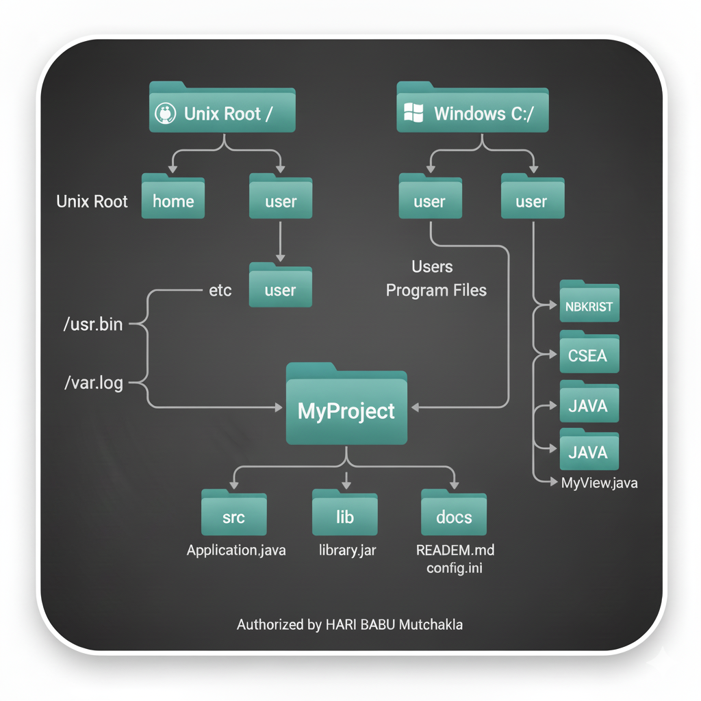

What Is a Path? (And Other File System Facts)
A file system stores and organizes files on some form of media, generally one or more hard drives, in such a way that they can be easily retrieved. Most file systems in use today store the files in a **tree** (or **hierarchical**) structure. At the top of the tree is one (or more) **root nodes**. Under the root node, there are files and **directories** (folders in Microsoft Windows). Each directory can contain files and subdirectories, which in turn can contain files and subdirectories, and so on, potentially to an almost limitless depth.
What Is a Path?
The following figure shows a sample directory tree containing a single root node. Microsoft Windows supports multiple root nodes. Each root node maps to a volume, such as C:\ or D:\. The Solaris OS supports a single root node, which is denoted by the slash character, /.

A file is identified by its **path** through the file system, beginning from the root node. For example, the statusReport file in the previous figure is described by the following notation in the Solaris OS:
/home/sally/statusReport
In Microsoft Windows, statusReport is described by the following notation:
C:\home\sally\statusReport
The character used to separate the directory names (also called the **delimiter**) is specific to the file system: The Solaris OS uses the forward slash (/), and Microsoft Windows uses the backslash slash (\).

Relative or Absolute?
A path is either **relative** or **absolute**.
An **absolute path** always contains the root element and the complete directory list required to locate the file. For example, /home/sally/statusReport is an absolute path. All of the information needed to locate the file is contained in the path string.
A **relative path** needs to be combined with another path in order to access a file. For example, joe/foo is a relative path. Without more information, a program cannot reliably locate the joe/foo directory in the file system.